Screenshots - OpenOffice.org 1.1
Screenshots der Entwicklerversion 1.9.xx finden Sie hier.
Durch Klicken auf die Bilder erhalten Sie weitere Screenshots oder die
Vollbilddarstellung.
Writer |
Calc |
Impress |
Draw |
| 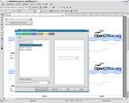 | 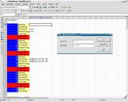 | 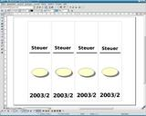 | |
Math |
Datenbankanbindung |
Gallery |
Html-Editor |
| 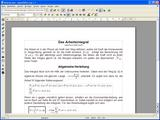 | 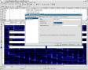 | 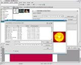 | 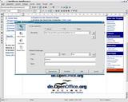 |
OpenOffice.org |
OpenOffice.org |
OpenOffice.org |
|
| 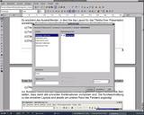 | 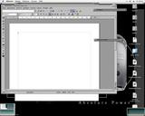 | ||
Bitstream-Vera -- |
CTL - |
||
| 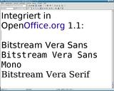 | 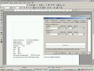 | ||
Aus anderen Projekten:
Taschenrechner, DMaths, DMaths-Plotter, DMaths-Konstruktion, Symbole Debian GNU/Linux
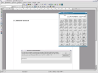 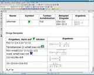 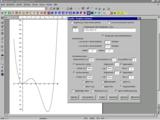 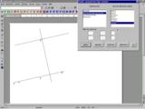 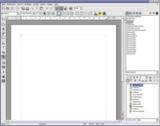
Mandrake Linux
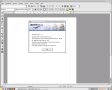
Weitere Screenshots:
- Internationale (u.a. englische) Bilder zu OpenOffice.org finden Sie hier.
- Tschechische Bilder zu OpenOffice.org finden Sie hier.
- Japanische Bilder zu OpenOffice.org finden Sie hier.
- Englische Bilder zu OpenOffice.org auf dem Mac finden Sie hier.
- Bilder zu OpenOffice.org auf Hindi und Tamil finden Sie hier und hier.
- Arabische Screenshots zu OOo: hier.
- Die türkische Version von OpenOffice.org 1.1 können Sie hier sehen.
- Eine Übersichtsseite in Polnisch finden Sie hier.
- OpenOffice.org auf dem Ximian-Desktop: (1), (2), (3), (4).
- Bilder des KDE-Projektes: (1), (2), (3), (4), (5), (6).
{kind=link}
{kind=link}
{kind=link}
{kind=link}
{kind=link}
{kind=link}
{kind=link}
{kind=link}
{kind=link}
{kind=link}
Vergleich OpenOffice.org 1.0 mit
Microsoft Office 2002 (englisch).
Anregungen zu dieser Seite nimmt gerne Andreas Mantke (andreasma@openoffice.org) entgegen.